KINH TẾ
Chủ Nhật, ngày 27/10/2024
Thủ tướng Phạm Minh Chính và Phu nhân bắt đầu
thăm chính thức UAE
Theo TTXVN-Chủ nhật, ngày 27/10/2024 15:35 GMT+7
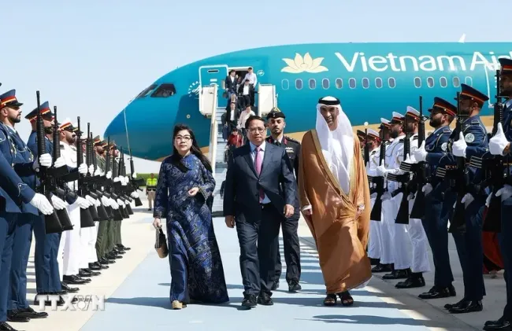
VTV.vn - Chuyến thăm của Thủ tướng Phạm Minh Chính là chuyến thăm chính thức đầu tiên của Thủ tướng Chính phủ Việt Nam đến Các Tiểu vương quốc Arab Thống nhất (UAE) sau 15 năm...
Sau hơn 6 giờ bay, vào lúc 11 giờ ngày 27/10 (giờ địa phương), chuyên cơ chở Thủ tướng Phạm Minh Chính và Phu nhân cùng Đoàn đại biểu cấp cao Việt Nam đã tới Sân bay quốc tế Zayed, Thủ đô Abu Dhabi bắt đầu thăm chính thức Các Tiểu vương quốc Arab Thống nhất (UAE) theo lời mời của Tổng thống UAE Mohamed bin Zayed Al Nahyan. Đón Thủ tướng Phạm Minh Chính và Phu nhân cùng đoàn đại biểu cấp cao Việt Nam tại sân bay Zayed có Quốc vụ khanh phụ trách Ngoại thương, Bộ trưởng chuyên trách về thu hút nhân tài UAE Thani Bin Ahmed Al Zayoudi; Đại sứ Việt Nam tại UAE Nguyễn Thanh Diệp; cán bộ, nhân viên Đại sứ quán và đại diện cộng đồng người Việt Nam tại UAE. Khi Thủ tướng Phạm Minh Chính và Phu nhân bước xuống thang máy bay các cháu thiếu nhi UAE đã đợi sẵn để tặng Thủ tướng và Phu nhân bó hoa tươi thắm. Quốc vụ khanh UAE Thani Bin Ahmed Al Zayoudi đón Thủ tướng và Phu nhân trên thảm xanh giữa hai hàng tiêu binh danh dự. Dự kiến trong chương trình thăm chính thức UAE, Thủ tướng Chính phủ Phạm Minh Chính sẽ có các cuộc hội đàm với Tổng thống UAE Mohammed Bin Zayed Al Nahyan; Thủ tướng, Phó Tổng thống UAE Sheikh Mohammed Bin Rasheed AL Makhtoum. Dịp này, hai nước sẽ nâng cấp quan hệ; nhiều văn kiện hợp tác Việt Nam-UAE sẽ được ký kết. Thủ tướng Phạm Minh Chính cũng sẽ tiếp các Bộ trưởng, lãnh đạo nhiều tập đoàn kinh tế, quỹ đầu tư hàng đầu UAE; dự tọa đàm với doanh nghiệp Việt Nam-UAE; dự Lễ trưng bày và giới thiệu xe Vinfast tại UAE; phát biểu chính sách tại Học viện Anwar Gargash; gặp gỡ cán bộ, nhân viên Đại sứ quán và cộng đồng người Việt Nam tại UAE… Đây là chuyến thăm chính thức đầu tiên của Thủ tướng Chính phủ Việt Nam đến UAE sau 15 năm; diễn ra trong bối cảnh quan hệ giữa hai nước Việt Nam và UAE đang phát triển tốt đẹp. Hai bên vừa tổ chức nhiều hoạt động kỷ niệm 30 năm thiết lập quan hệ ngoại giao trong năm 2023. Trong hơn 30 năm qua, quan hệ hữu nghị và hợp tác Việt Nam-UAE ngày càng phát triển tích cực trên nhiều lĩnh vực chính trị, ngoại giao, thương mại, đầu tư, lao động và du lịch. Sự tin cậy chính trị và hiểu biết lẫn nhau giữa hai nước không ngừng được củng cố. Các hoạt động trao đổi đoàn sôi động ở nhiều cấp giữa hai nước thời gian gần đây là minh chứng rõ nét. Hợp tác kinh tế luôn là trụ cột quan trọng và là điểm sáng trong bức tranh tổng thể quan hệ hợp tác Việt Nam-UAE. UAE hiện là thị trường xuất khẩu lớn nhất của Việt Nam tại khu vực Trung Đông-châu Phi với kim ngạch thương mại song phương 9 tháng năm 2024 đạt 4,96 tỷ USD, vượt kim ngạch của cả năm 2023. Hai nước phấn đấu sớm đạt được mục tiêu 10 tỷ USD kim ngạch thương mại trong tương lai gần và cao hơn nữa trong những năm tiếp theo. UAE là một trong những nhà đầu tư lớn tại Việt Nam với tổng số 42 dự án đầu tư trực tiếp (FDI), đứng thứ 52/148 quốc gia và vùng lãnh thổ đầu tư vào Việt Nam. Hiện có khoảng 3.000 lao động Việt Nam đang làm việc tại UAE. Phía UAE mong muốn được tiếp nhận thêm nhiều lao động Việt Nam sang làm việc tại UAE trong thời gian tới, hỗ trợ Việt Nam đào tạo nghề cho lao động. Chuyến thăm chính thức UAE của Thủ tướng Phạm Minh Chính nhằm góp phần củng cố tin cậy chính trị, nâng tầm quan hệ, tạo đột phá trong quan hệ giữa hai nước trong thời gian tới trên nhiều lĩnh vực, từ kinh tế, thương mại, đầu tư, tới các lĩnh vực hợp tác mới như đổi mới sáng tạo, khoa học, công nghệ, năng lượng…
Theo báo VTV.VN
Phó Thủ tướng Trần Hồng Hà
chỉ đạo công tác ứng phó với bão số 6
Theo Báo điện tử Chính phủ-Chủ nhật, ngày 27/10/2024 10:13 GMT+7
VTV.vn - Theo báo cáo cập nhật mới nhất của Trung tâm Dự báo Khí tượng thuỷ văn quốc gia, sáng 27/10, bão số 6 đang ở trên vùng biển Nam Quảng Trị - Đà Nẵng.
Sáng 27/10, tại Trung tâm Thông tin, chỉ đạo điều hành của Chính phủ, Thủ tướng Chính phủ, Phó Thủ tướng Trần Hồng Hà họp trực tuyến với các tỉnh từ Hà Tĩnh đến Quảng Ngãi và tỉnh Kon Tum về công tác ứng phó với bão số 6 (bão TRAMI) sẽ đổ bộ lên đất liền Nam Quảng Trị-Bắc Quảng Nam vào trưa 27/10.
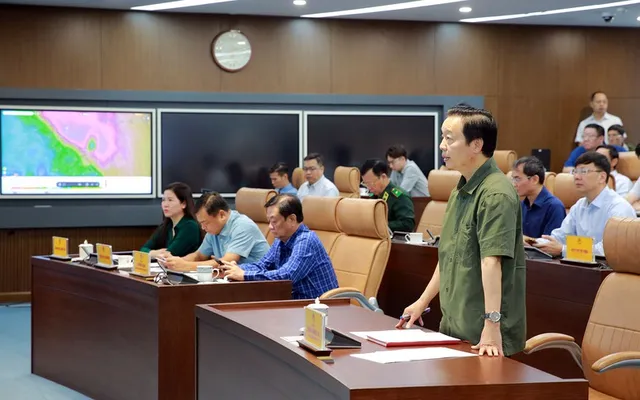
Theo báo cáo cập nhật mới nhất của Trung tâm Dự báo Khí tượng thuỷ văn quốc gia, sáng 27/10, bão số 6 đang ở trên vùng biển Nam Quảng Trị - Đà Nẵng. Vùng biển các tỉnh từ Quảng Bình đến Quang Ngãi (bao gồm đảo Cồn Cỏ, Lý Sơn, Cù lao Chàm) có gió mạng cấp 6-7, vùng gần tâm bão mạnh cấp 9-10, giật cấp 12. Sóng biển cao 2-4 m, vùng gần tâm bão cao 4-6 m. Biển động rất mạnh. Khu vực biển ven bờ Quảng Bình-Quảng Trị và Quảng Ngãi-Bình Định có sóng cao 2-4 m; khu vực Huế-Quảng Nam cao 3-5 m.
Dự báo trưa ngày 27/10, bão số 6 sẽ đi vào đất liền khu vực Nam Quảng Trị-Đà Nẵng, vùng gần tập bão có gió mạnh cấp 8-9, giật cấp 11. Ven biển Quảng Trị, Thừa Thiên Huế, Đà Nẵng có gió mạnh cấp 8-9, giật cấp 10-11; sâu hơn trong đất liền có thể có gió mạnh cấp 6-7, giật cấp 8-9. Thời gian nguy hiểm nhất của gió mạnh là từ sáng 27/10 đến chiều 27/10.
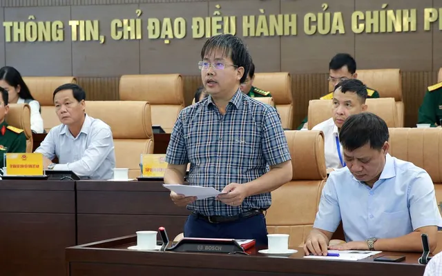
Trong 12-24 giờ tiếp theo, bão di chuyển theo hướng Đông dịch chuyển ngược trở lại biển, suy yếu thành áp thấp nhiệt đới, sau là vùng áp thấp và tan dần.
Dự báo, từ sáng 27/10 đến hết ngày 29/10, khu vực Quảng Bình-Quảng Ngãi tiếp tục mưa to 200-400 mm, có nơi trên 600 mm. Khu vực Nam Nghệ An, Hà Tĩnh,; khu vực Quảng Ngãi, Kon Tum có mưa từ 150-250 mm, có nơi trên 400 mm. Khu vực Bắc Nghệ An, Gia Lai có mưa từ 50-100 mm, có nơi trên 150 mmm. Khả năng xuất hiện lũ trên các sông từ Quảng Trị đến Quảng Ngãi ở mức BĐ2-BĐ3, các sông ở Quảng Bình BĐ2, các sông ở Hà Tĩnh, Bình Định, Kon Tum BĐ1.
Từ Quảng Bình đến Quảng Ngãi có trên 30 huyện và khu đô thị với 365 xã có nguy cơ ngập lụt. Nguy cơ xảy ra lũ quét, sạt lở đất ở mức cao đến rất cao ở các sườn đồi dốc, taluy tại khu vực từ Nam Nghệ An đến Bình Định, Kon Tum và Gia Lai, đặc biệt là từ Quảng Bình đến Quảng Nam.
Đến nay, các lực lượng chức năng đã kiểm đếm, hướng dẫn 67.212 phương tiện/307.822 người biết diễn biến, hướng đi của bão; hiện không có phương tiện nằm trong vùng nguy hiểm.
TS. Mai Văn Khiêm, Giám đốc Trung tâm Dự báo Khí tượng thuỷ văn Quốc gia, cho biết với dự báo của bão số 6 sẽ quay trở lại Biển Đông thì các biện pháp phòng chống bão trên phải hết sức chú ý và kéo dài thời gian hơn.
Tại cuộc họp, Phó Thủ tướng đã nghe báo cáo trực tiếp từ Đài khí tượng Quảng Trị về diễn biến cấp gió giật, cường độ mưa, lũ trên các sông, nguy cơ lũ quét, sạt lở đất… Trong đó trọng điểm là mưa lớn ở khu vực phía nam, sạt lở đất tại khu vực miền núi phía tây.
Chủ tịch UBND tỉnh Thừa Thiên Huế Nguyễn Văn Phương cho biết, từ 7h sáng nay, tỉnh đã thực hiện cấm người dân không ra đường khi có gió mạnh; duy trì lực lượng công an, biên phòng, quân đội và ứng trực để kịp thời cứu hộ, cứu nạn.Hiện nay, trên toàn tỉnh, đặc biệt là vùng ven biển gió đang mạnh dần lên cấp 6-7, khu vực cửa Thuận An có triều cường cao 1,8 m, gây xói lở, tỉnh đã di dời 815 hộ dân ra khỏi vùng ảnh hưởng.
"Với tổng lượng mưa dược dự báo thì các hồ chứa trên địa bàn đều bảo đảm chống lũ, tuy nhiên do mưa dài ngày nên tỉnh sẽ tiếp tục theo dõi và lên phương án di dời khoảng 10.000 hộ dân với trên 32.000 nhân khẩu ra khỏi vùng sạt lở", ông Nguyễn Văn Phương nói.
Thứ trưởng Bộ NN&PTNT Nguyễn Hoàng Hiệp cho biết, các hồ chứa, hồ thuỷ điện tại khu vực Trung Trung Bộ đang trong giai đoạn tích nước nên bảo đảm yêu cầu chống lũ. Nhưng điểm cần lưu ý là thời gian cấm tàu thuyền hoạt động tại khu vực biển nằm trong vùng ảnh hưởng của bão số 6 kéo dài hơn trước; nguy cơ sạt lở cao tại khu vực miền núi do mưa lớn kéo dài.
Đại diện Bộ Quốc phòng cho biết, lực lượng, phương tiện của quân đội sẵn sàng tham gia ứng phó bão số 6 là trên 275.000 người, hơn 6.000 ô tô, tàu, xuồng, máy bay. Bộ Quốc phòng đã chỉ đạo Quân khu 4, Quân khu 5, các đơn vị đứng chân trên địa bàn các tỉnh, thành phố phối hợp với chính quyền địa phương thực hiện nghiêm các biện pháp chủ động ứng phó bão số 6, mưa lũ ảnh hưởng của bão.
Theo báo VTV.VN
Tiễn đoàn công tác Cảnh sát biển Việt Nam
đi thăm và làm việc tại Hàn Quốc
Chủ nhật, ngày 27/10/2024 - 17:03
Sáng 27/10, tại thành phố Hải Phòng, Bộ Tư lệnh Vùng Cảnh sát biển 1 (Cảnh sát biển Việt Nam) tổ chức tiễn Tàu Cảnh sát biển (CSB) 8004, Hải đoàn 11, thuộc Bộ Tư lệnh Vùng Cảnh sát biển 1, đưa Đoàn công tác của Cảnh sát biển Việt Nam lên đường đi thăm, giao lưu, chia sẻ kinh nghiệm với Lực lượng bảo vệ bờ biển Hàn Quốc, do Đại tá Lê Thanh Hải, Phó Tư lệnh Vùng Cảnh sát biển 1 làm trưởng đoàn.
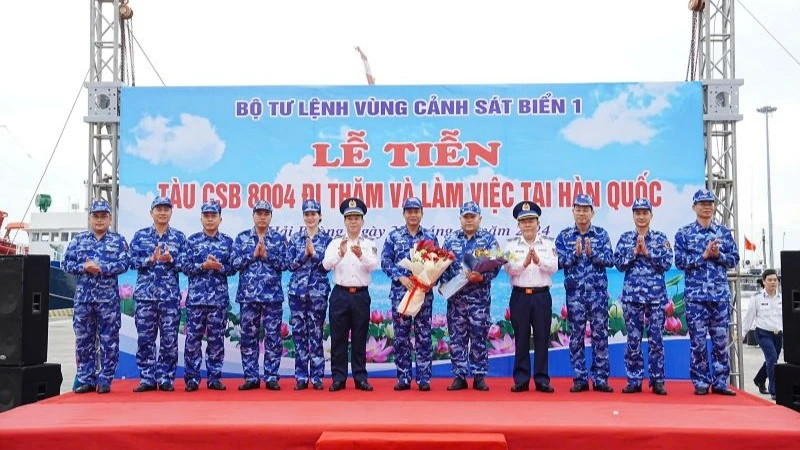
Lực lượng Cảnh sát biển Việt Nam tổ chức tàu đi thăm, giao lưu tại Hàn Quốc lần này có ý nghĩa chính trị sâu sắc, góp phần tăng cường mối quan hệ hữu nghị, sự hiểu biết, tin cậy lẫn nhau giữa Cảnh sát biển Việt Nam và Lực lượng bảo vệ bờ biển Hàn Quốc.
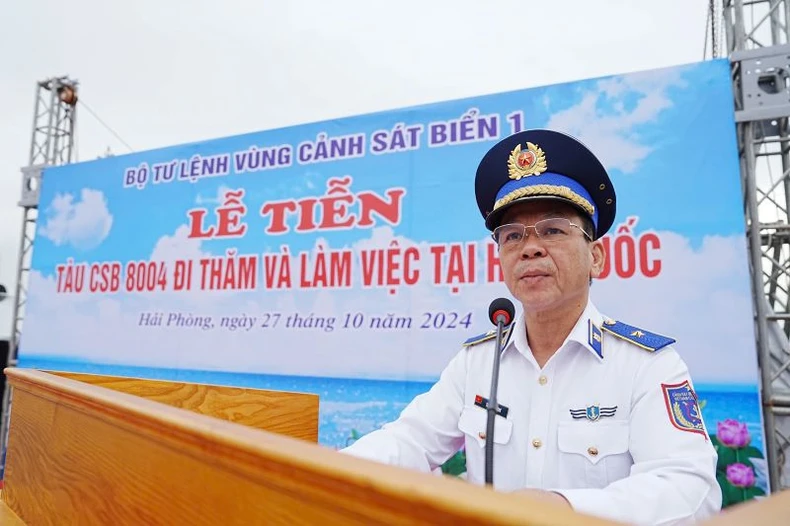
Đây cũng là dịp để lực lượng Cảnh sát biển hai nước thúc đẩy mối quan hệ hữu nghị, hợp tác toàn diện, nâng cao năng lực thực thi pháp luật trên biển, khả năng phối hợp, hiệp đồng tìm kiếm cứu nạn, phòng, chống cháy nổ, góp phần duy trì hòa bình, ổn định, an ninh, an toàn trên vùng biển có liên quan và trong khu vực.
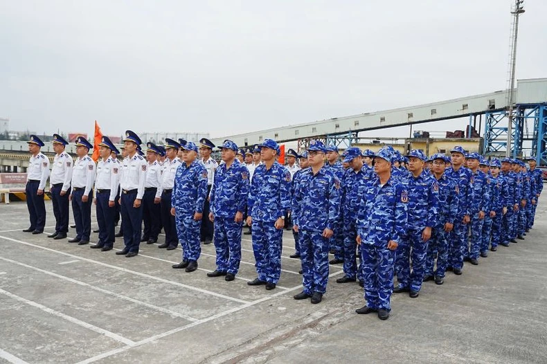
Trong khuôn khổ chuyến thăm, giao lưu với Lực lượng bảo vệ bờ biển Hàn Quốc, Đoàn công tác của Cảnh sát biển Việt Nam sẽ thăm, chào xã giao lãnh đạo Lực lượng bảo vệ bờ biển Hàn Quốc; giao lưu thể thao, tham quan văn hóa tại thành phố Yeosu, Hàn Quốc.
Đặc biệt trong chuyến thăm, giao lưu lần này, Tàu CSB 8004 sẽ luyện tập chung với tàu của Lực lượng bảo vệ bờ biển Hàn Quốc về tìm kiếm cứu nạn, phòng, chống cháy nổ trên biển, nhằm nâng cao khả năng làm chủ phương tiện, trang thiết bị kỹ thuật cũng như kinh nghiệm trong tham gia tìm kiếm cứu nạn và phòng, chống cháy nổ trên biển cho cán bộ, chiến sĩ.
Theo báo Nhân Dân
Thúc đẩy công bằng khí hậu
thông qua cách tiếp cận pháp quyền
Chủ nhật, ngày 27/10/2024 - 16:38
Đại sứ Đặng Hoàng Giang khẳng định tiến trình thúc đẩy công bằng khí hậu mà các nước, trong đó có Vanuatu và Việt Nam, phối hợp thực hiện thời gian qua đã có nhiều tiến triển.
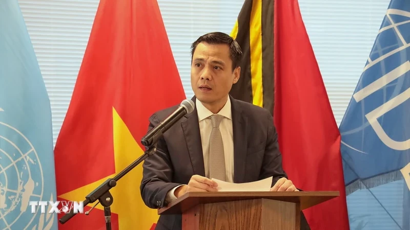
Ngày 26/10, trong khuôn khổ Tuần lễ luật pháp quốc tế thường niên của Đại hội đồng Liên hợp quốc khóa 79, Phái đoàn hai nước Việt Nam và Vanuatu tại Liên hợp quốc đã phối hợp cùng Tổ chức Phát triển Luật Quốc tế (IDLO) tổ chức hội thảo với chủ đề: Thúc đẩy công bằng khí hậu thông qua thủ tục xin ý kiến tư vấn các cơ quan tư pháp quốc tế.
Hội thảo đã thu hút sự tham gia của nhiều diễn giả đến từ nước đồng tổ chức và một số cơ quan của Liên hợp quốc hay các tổ chức quốc tế như Cơ quan Liên hợp quốc về bình đẳng giới và trao quyền cho phụ nữ (UN Women), IDLO, Liên minh quốc tế về bảo tồn thiên nhiên (IUCN), Tổ chức thanh niên thế giới vì công bằng khí hậu.
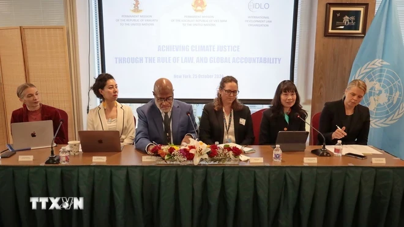
Phát biểu khai mạc hội thảo, Đại sứ Đặng Hoàng Giang, Trưởng Phái đoàn thường trực Việt Nam tại Liên hợp quốc, nhấn mạnh biến đổi khí hậu là một trong những thách thức cấp bách nhất mà cộng đồng quốc tế đang phải đối mặt, tác động nhiều mặt đến nhiều nước, nhất là các quốc gia ven biển và các quốc đảo nhỏ, đặc biệt là những nhóm người dễ bị tổn thương tại các nước này như phụ nữ, trẻ em và người cao tuổi.
Thực tế này cho thấy các quốc gia cần tiếp tục hợp tác đẩy mạnh hành động trên mọi lĩnh vực, đặc biệt là thông qua các tiến trình thảo luận về khí hậu hiện có và thủ tục pháp lý tại cơ quan tư pháp quốc tế.
Đại sứ Việt Nam khẳng định tiến trình thúc đẩy công bằng khí hậu mà các nước, trong đó có Vanuatu và Việt Nam, phối hợp thực hiện thời gian qua đã có nhiều tiến triển như việc Tòa án Luật biển Quốc tế hồi tháng 5/2024 đã ban hành ý kiến tư vấn về trách nhiệm của quốc gia đối với môi trường biển và biến đổi khí hậu trong khuôn khổ Công ước Liên hợp quốc về Luật Biển năm 1982 (UNCLOS), hay Tòa án Công lý Quốc tế (ICJ) đang xem xét cho ý kiến tư vấn về trách nhiệm của các quốc gia đối với vấn đề biến đổi khí hậu.
Tại hội thảo, các diễn giả và đại biểu tham dự cùng trao đổi về những kết quả đã đạt được và phương hướng thúc đẩy công bằng khí hậu thông qua cách tiếp cận pháp quyền, tăng cường trách nhiệm giải trình, đẩy mạnh thực hiện các cam kết khí hậu, trách nhiệm quốc gia và hợp tác đa phương để giảm thiểu những tác động tiêu cực do biến đổi khí hậu đối với các thế hệ hiện tại và tương lai.
Tham gia với tư cách diễn giả tại hội thảo, Phó giáo sư-Tiến sỹ Nguyễn Thị Lan Anh, Viện trưởng Viện Biển Đông, Học viện Ngoại giao, ứng cử viên của Việt Nam cho vị trí Thẩm phán Tòa án Luật biển Quốc tế (ITLOS) nhiệm kỳ 2026-2035, nhận định các tòa án quốc tế và khu vực có vai trò ngày càng tăng trong giải quyết các khía cạnh pháp lý về biến đổi khí hậu những năm gần đây.
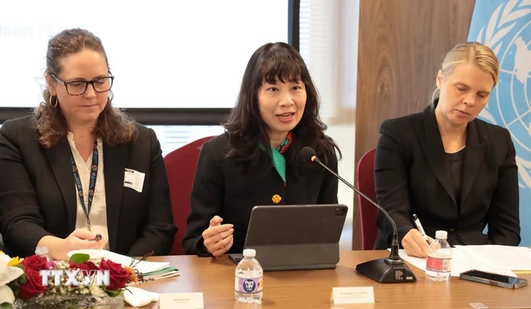
Bà Nguyễn Thị Lan Anh nhấn mạnh cách tiếp cận tổng thể mà ITLOS áp dụng trong việc xác định trách nhiệm của các quốc gia trong lĩnh vực môi trường biển và biến đổi khí hậu, đồng thời kêu gọi các nước và các tổ chức quốc tế cùng nhau chia sẻ quan điểm tại phiên điều trần sắp tới tại ICJ để tòa án này có thêm cơ sở xem xét đầy đủ các khía cạnh, các chế định khác nhau của luật quốc tế liên quan đến biến đổi khí hậu.
Hội thảo đã thu hút sự tham gia và thảo luận sôi nổi của hơn 70 đại biểu, đại diện các nước dự phiên họp của Đại hội đồng Liên hợp quốc, cán bộ pháp lý phái đoàn các nước tại New York và đại diện các tổ chức quốc tế, các tổ chức phi chính phủ quan tâm đến vấn đề biến đổi khí hậu.
Theo TTXVN
Thứ Bảy, ngày 26/10/2024
Ngày 26/10, Quốc hội thảo luận ở tổ về tình hình kinh tế - xã hội
Tạ Hiển-Thứ bảy, ngày 26/10/2024 06:00 GMT+7
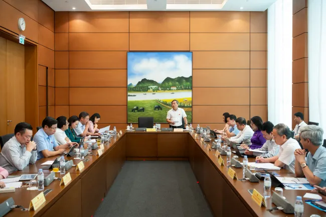
VTV.vn - Quốc hội sẽ thảo luận ở tổ về tình hình kinh tế - xã hội; tình hình thi hành Hiến pháp, luật, nghị quyết; chủ trương điều chỉnh Quy hoạch sử dụng đất quốc gia...
Thứ 7 (26/10), các đại biểu Quốc hội dành cả ngày làm việc để thảo luận ở tổ về: - Đánh giá kết quả thực hiện kế hoạch phát triển kinh tế - xã hội năm 2024; dự kiến kế hoạch phát triển kinh tế - xã hội năm 2025. - Tình hình thi hành Hiến pháp; thi hành luật, nghị quyết của Quốc hội, pháp lệnh, nghị quyết của Ủy ban Thường vụ Quốc hội. - Tình hình thực hiện ngân sách nhà nước năm 2024, dự toán ngân sách nhà nước, phương án phân bổ ngân sách trung ương năm 2025 (trong đó có Kế hoạch tài chính - ngân sách nhà nước 03 năm 2025-2027; tình hình thực hiện kế hoạch đầu tư công vốn ngân sách nhà nước năm 2024, dự kiến kế hoạch đầu tư công vốn ngân sách nhà nước năm 2025; tình hình thực hiện kế hoạch tài chính năm 2024, dự kiến kế hoạch tài chính năm 2025 của các quỹ tài chính nhà nước ngoài ngân sách do trung ương quản lý); một số nội dung về điều chỉnh, bổ sung dự toán ngân sách nhà nước. - Chủ trương điều chỉnh Quy hoạch sử dụng đất quốc gia thời kỳ 2021-2030, tầm nhìn đến năm 2050. - Chủ trương đầu tư bổ sung vốn nhà nước tại Ngân hàng Thương mại cổ phần Ngoại thương Việt Nam (VCB). Cuối ngày làm việc, Quốc hội tiếp tục thảo luận ở tổ về dự án Luật Điện lực (sửa đổi).
Kinh tế - xã hội 9 tháng 2024 đạt nhiều kết quả quan trọng
Trước đó, ngày 21/10, trình bày báo cáo phát triển kinh tế xã hội tại phiên khai mạc Kỳ họp thứ 8, Quốc hội khóa XV, Thủ tướng Chính phủ Phạm Minh Chính nhấn mạnh, 9 tháng năm 2024 tình hình kinh tế - xã hội đạt nhiều kết quả quan trọng, cao hơn cùng kỳ trên hầu hết các lĩnh vực. Ước cả năm có 14/15 chỉ tiêu đạt và vượt kế hoạch.
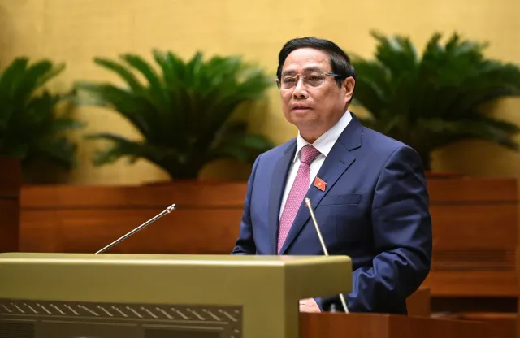
Đáng chú ý, tăng trưởng GDP 9 tháng đạt 6,82%, ước cả năm đạt 6,8 - 7%, cao hơn mục tiêu Quốc hội giao (6 - 6,5%). Việt Nam thuộc nhóm nước có tốc độ tăng trưởng cao trong khu vực và thế giới, được nhiều tổ chức quốc tế lớn, có uy tín đánh giá cao. Chỉ số giá tiêu dùng (CPI) bình quân 9 tháng tăng 3,88%. Kim ngạch xuất nhập khẩu 9 tháng đạt 578,5 tỷ USD, xuất siêu gần 20,8 tỷ USD…
Đầu tư phát triển đạt kết quả tích cực. Cụ thể đã hoàn thành Dự án 500kV mạch 3 Quảng Bình - Hưng Yên sau hơn 6 tháng thi công thần tốc. Hoàn thành một số đoạn đường bộ cao tốc, nâng tổng chiều dài lên 2.021 km…
Cơ cấu nền kinh tế chuyển dịch tích cực theo hướng phát triển kinh tế số, kinh tế xanh, tăng tỷ trọng khu vực công nghiệp, xây dựng và dịch vụ, giảm tỷ trọng khu vực nông nghiệp. Công nghiệp phục hồi tích cực, là động lực quan trọng, dẫn dắt tăng trưởng. Dịch vụ duy trì đà phục hồi tốt; thương mại điện tử, du lịch phát triển mạnh…
Bên cạnh những kết quả đạt được, Thủ tướng cũng chỉ ra những hạn chế, bất cập. Theo đó, ổn định kinh tế vĩ mô còn tiềm ẩn rủi ro. Hoạt động sản xuất, kinh doanh còn gặp khó khăn khi thống kê cho thấy, trong 9 tháng, có đến 163.800 doanh nghiệp rút lui khỏi thị trường.
Nợ xấu có xu hướng tăng; khối lượng trái phiếu doanh nghiệp đáo hạn trong năm 2024 còn cao. Giải ngân vốn đầu tư công chậm; lãng phí trong quản lý tài sản công, đất đai… còn lớn; công tác bồi thường, giải phóng mặt bằng, tái định cư còn kéo dài. Buôn lậu, gian lận thương mại diễn biến phức tạp…
Theo báo VTV.VN
Ông Thái Thanh Quý giữ chức
Phó Trưởng Ban Kinh tế Trung ương
TTXVN-Thứ bảy, ngày 26/10/2024 19:28 GMT+7
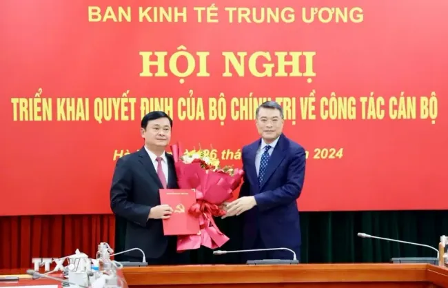
VTV.vn - Chiều 26/10, tại Hà Nội, Ban Kinh tế Trung ương tổ chức Hội nghị triển khai quyết định của Bộ Chính trị về công tác cán bộ.
Dự Hội nghị có: Ủy viên Bộ Chính trị, Bí thư Trung ương Đảng, Trưởng Ban Tổ chức Trung ương Lê Minh Hưng; Trưởng Ban Kinh tế Trung ương Trần Lưu Quang; đại diện các cơ quan Đảng Trung ương; đại diện lãnh đạo Tỉnh ủy, Hội đồng Nhân dân, Ủy ban Nhân dân tỉnh Nghệ An.
Tại Hội nghị, Phó Trưởng Ban Tổ chức Trung ương Đỗ Trọng Hưng đã công bố Quyết định 1620-QĐNS/TW ngày 25/10/2024 của Bộ Chính trị điều động, bổ nhiệm giữ chức Phó Trưởng Ban Kinh tế Trung ương.
Bộ Chính trị quyết định ông Thái Thanh Quý, Ủy viên Trung ương Đảng, Bí thư Tỉnh ủy, Chủ tịch Hội đồng Nhân dân tỉnh, Trưởng Đoàn đại biểu Quốc hội khóa XV tỉnh Nghệ An thôi tham gia Ban Chấp hành, Ban Thường vụ Tỉnh ủy và thôi giữ chức Bí thư Tỉnh ủy nhiệm kỳ 2020-2025; điều động, phân công, bổ nhiệm giữ chức Phó Trưởng Ban Kinh tế Trung ương.
Trao quyết định, tặng hoa và chúc mừng ông Thái Thanh Quý được Bộ Chính trị tin tưởng giao trọng trách mới, Trưởng Ban Tổ chức Trung ương Lê Minh Hưng nhấn mạnh ông Thái Thanh Quý là cán bộ trưởng thành từ cơ sở, kinh qua nhiều vị trí, đơn vị công tác ở tỉnh Nghệ An.
Trên cương vị được giao, ông Thái Thanh Quý luôn hoàn thành tốt, hoàn thành xuất sắc nhiệm vụ, có đóng góp rất quan trọng vào thành tích, kết quả chung của tỉnh Nghệ An.
Nhấn mạnh đây là nhiệm vụ mới, rất quan trọng nhưng cũng rất vinh dự đối với cá nhân ông Thái Thanh Quý, Trưởng Ban Tổ chức Trung ương Lê Minh Hưng đề nghị tân Phó Trưởng Ban Kinh tế Trung ương nhanh chóng tiếp cận công việc, phát huy năng lực, sở trường, kinh nghiệm của mình, cùng với tập thể lãnh đạo Ban Kinh tế Trung ương tiếp tục làm tốt chức năng tham mưu, giúp việc cho Ban Chấp hành Trung ương, trực tiếp và thường xuyên là Bộ Chính trị, Ban Bí thư, Thường trực Ban Bí thư trong việc định hướng xây dựng, hoàn thiện thể chế kinh tế, hoạch định đường lối, chủ trương, biện pháp lớn, quan trọng về kinh tế - xã hội thời gian tới.
"Tập thể lãnh đạo Ban Kinh tế Trung ương tiếp tục quán triệt sâu sắc quan điểm, chủ trương, đường lối của Đảng, nhất là sự chỉ đạo của Bộ Chính trị và đặc biệt là chỉ đạo của Tổng Bí thư Tô Lâm là đưa đất nước ta bước vào kỷ nguyên mới, kỷ nguyên vươn mình của dân tộc Việt Nam," Trưởng Ban Tổ chức Trung ương Lê Minh Hưng nhấn mạnh.
Trưởng Ban Kinh tế Trung ương Trần Lưu Quang nêu rõ việc kiện toàn nhân sự lãnh đạo Ban thể hiện sự quan tâm đến công tác tham mưu chiến lược, hoạch định chính sách, chủ trương, đường lối về phát triển kinh tế - xã hội của Đảng.
Đánh giá ông Thái Thanh Quý là cán bộ trẻ, được đào tạo bài bản, kinh qua nhiều vị trí công tác, tích lũy được nhiều kinh nghiệm thực tiễn, Trưởng Ban Kinh tế Trung ương Trần Lưu Quang cho rằng sự có mặt của ông Thái Thanh Quý trong tập thể lãnh đạo sẽ làm gia tăng sức mạnh của Ban Kinh tế Trung ương trong thực hiện nhiệm vụ được giao; đồng thời đề nghị tân Phó Ban Kinh tế Trung ương tiếp cận nhanh với công việc, phối hợp tốt với các lãnh đạo Ban để hoàn thành nhiệm vụ được giao.
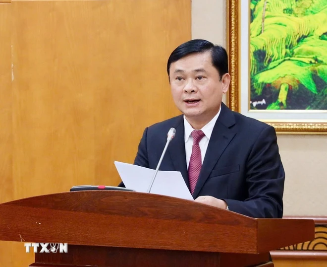
Ông Thái Thanh Quý cảm ơn Bộ Chính trị đã tin tưởng giao cho ông đảm nhiệm chức vụ quan trọng này; khẳng định đây là niềm vinh dự, là dấu mốc đặc biệt trong quá trình phấn đấu, công tác của cá nhân, đồng thời là trách nhiệm trước Đảng và trước yêu cầu cao của công việc.
Trên cương vị mới, tân Phó Trưởng Ban Kinh tế Trung ương khẳng định sẽ dành tâm trí, sức lực, nêu cao tinh thần, trách nhiệm, tiếp cận nhanh với công việc được phân công, tiếp tục học tập, tu dưỡng, rèn luyện, giữ vững phẩm chất đạo đức, lối sống và nâng cao năng lực công tác, thực hiện nghiêm nguyên tắc lãnh đạo trong Đảng, sẵn sàng sẻ chia và cầu thị, toàn tâm, toàn ý cùng tập thể lãnh đạo, cán bộ, công chức, viên chức Ban Kinh tế Trung ương phát huy truyền thống, phấn đấu hoàn thành cao nhất các nhiệm vụ được giao.
Ông Thái Thanh Quý sinh năm 1976, quê tại tỉnh Nghệ An; trình độ: Tiến sỹ kinh tế. Ông từng đảm nhiệm nhiều vị trí công tác ở tỉnh Nghệ An: Phó Bí thư rồi Bí thư Tỉnh đoàn, Bí thư Huyện ủy Nam Đàn, Chánh Văn phòng Tỉnh ủy, Trưởng Ban Dân vận Tỉnh ủy, Phó Bí thư Tỉnh ủy, Chủ tịch Ủy ban Nhân dân tỉnh, Bí thư Tỉnh ủy, Chủ tịch Hội đồng Nhân dân tỉnh, Trưởng Đoàn đại biểu Quốc hội tỉnh Nghệ An. Ông là Ủy viên dự khuyết Trung ương Đảng khóa XII, Ủy viên Trung ương Đảng khóa XIII./.
Theo báo VTV.VN
Thủ tướng Phạm Minh Chính sẽ thăm UAE, Qatar và Saudi Arabia
TTXVN-Thứ bảy, ngày 26/10/2024 19:09 GMT+7
VTV.vn - Thủ tướng Chính phủ Phạm Minh Chính và Phu nhân cùng đoàn đại biểu cấp cao Việt Nam sẽ thăm chính thức UAE, Qatar, Saudi Arabia từ ngày 27/10-2/11.
Theo thông cáo của Bộ Ngoại giao, nhận lời mời của Tổng thống Các Tiểu Vương quốc Arab Thống nhất (UAE) Mohamed bin Zayed Al Nahyan, Thủ tướng Nhà nước Qatar Sheikh Mohammed bin Abdulrahman bin Jasim Al-Thani, Hoàng Thái tử kiêm Thủ tướng Vương quốc Saudi Arabia Mohammed Bin Salman, Thủ tướng Chính phủ Phạm Minh Chính và Phu nhân cùng đoàn đại biểu cấp cao Việt Nam sẽ thăm chính thức Các Tiểu Vương quốc Arab Thống nhất (UAE), Nhà nước Qatar, tham dự Hội nghị Sáng kiến đầu tư tương lai lần thứ 8 và thăm làm việc Vương quốc Saudi Arabia từ ngày 27/10-2/11.
Theo báo VTV.VN
Thứ Sáu, ngày 25/10/2024
Hội nghị các Nhà lãnh đạo Nhóm BRICS mở rộng:
Cùng kiến tạo một thế giới tốt đẹp hơn
Thứ sáu, ngày 25/10/2024 - 06:43
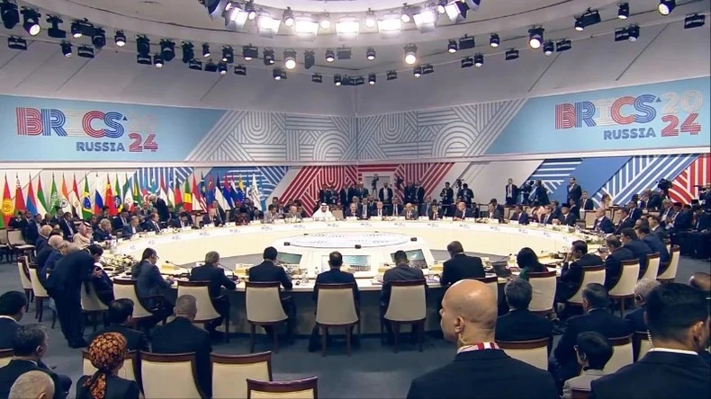
Thành phố Kazan, thủ phủ của Cộng hòa Tatarstan, Liên bang Nga, ra đời cách đây khoảng 10 thế kỷ, là vùng đất nổi tiếng với những công trình kiến trúc in đậm dấu ấn tâm linh, cổ kính, mang đậm chất sử thi, pha trộn hài hòa giữa nét cổ kính của kiến trúc Hồi giáo và sự hiện đại của một đô thị lớn. Tới sân bay quốc tế Kazan để tham dự Hội nghị các Nhà lãnh đạo Nhóm BRICS mở rộng, Thủ tướng Phạm Minh Chính được đón tiếp hết sức nồng hậu, trọng thị bằng nghi thức truyền thống; các cô gái Nga trong trang phục dân tộc mời thưởng thức bánh mì-muối. Đây là phong tục truyền thống thể hiện sự trọng thị, thiêng liêng, lòng hiếu khách của Xứ sở Bạch Dương.
Kazan mùa này vẫn được coi là cuối thu nhưng tiết trời đã giá rét. Tuy nhiên, đoàn chúng tôi thật sự cảm thấy ấm lòng khi chuyến xe buýt từ sân bay về, vừa mới dừng lại trước cửa khách sạn, đã nghe những tiếng hô vang “Việt Nam! Việt Nam!” của bà con cộng đồng và các sinh viên Việt Nam đang theo học tại Liên bang Nga.
Bà con cộng đồng người Việt Nam ở Tatarstan rất vui mừng vì đây là lần đầu được đón Thủ tướng Chính phủ và Đoàn đại biểu Việt Nam đến Kazan. Thành phố Kazan những ngày này khá vắng vẻ, vì để bảo đảm an toàn cho hội nghị, phía Nga đã cấm đường rất nhiều tuyến phố từ trung tâm đến nơi tổ chức hội nghị, tạm thời đóng cửa các trung tâm thương mại, khu vực buôn bán, cửa hàng ở khu vực trung tâm.
Liên bang Nga - nước Chủ tịch BRICS 2024 hết sức coi trọng sự tham dự của Việt Nam tại Hội nghị BRICS+ lần này. Việc Thủ tướng Phạm Minh Chính lần đầu tham dự Hội nghị thượng đỉnh BRICS+ mở ra triển vọng hợp tác mới giữa Việt Nam và BRICS, trước hết là cơ hội để thúc đẩy hợp tác sâu rộng với các quốc gia thành viên và đối tác của BRICS, đồng thời cho phép tiếp cận với các cơ chế, nguồn lực dồi dào, thị trường rộng lớn của BRICS phục vụ cho các mục tiêu phát triển đất nước, cũng như cơ hội phối hợp nỗ lực trong giải quyết các vấn đề cấp bách của chương trình nghị sự toàn cầu.
Tại phiên khai mạc Phiên toàn thể Hội nghị các Nhà lãnh đạo Nhóm BRICS mở rộng với chủ đề “BRICS và Nam bán cầu: Cùng xây dựng một thế giới tốt đẹp hơn”, Tổng thống Liên bang Nga Vladimir Putin nhấn mạnh, BRICS sẽ tiếp tục phát huy vai trò, thúc đẩy hợp tác toàn cầu, trao cho tất cả các quốc gia cơ hội bình đẳng, xây dựng hệ thống quản trị toàn cầu cân bằng và công bằng hơn, nâng cao vai trò của các quốc gia đang phát triển hơn nữa nhằm xây dựng một thế giới tốt hơn, trong đó các lợi ích chính đáng và quyền phát triển của tất cả các dân tộc được tôn trọng; chỉ khi cùng nhau hành động tập thể, chúng ta đối phó hiệu quả các thách thức, mối đe dọa toàn cầu, vì sự thịnh vượng phát triển chung...
Chúng ta cần tập trung đầu tư vào các dự án cơ sở hạ tầng và công nghệ lớn. Điều quan trọng là cần xây dựng các cơ chế tài chính đa phương đáng tin cậy, không bị áp đặt bởi bất kỳ sự chi phối nào; thúc đẩy các chuỗi sản xuất, logistics mới, thúc đẩy trao đổi công nghệ và kiến thức tiên tiến; nâng cao năng lực qua các hành lang vận tải quốc tế mới.
Về phần mình, Thủ tướng Phạm Minh Chính nhấn mạnh, BRICS đã tạo động lực, truyền cảm hứng cho các nước phương Nam, trong đó có Việt Nam trên con đường phát triển; nêu rõ, trong kỷ nguyên mới - kỷ nguyên kết nối và hội nhập sâu rộng, kỷ nguyên công nghệ thông minh và đổi mới sáng tạo, BRICS cần phải thể hiện sự gắn kết chặt chẽ giữa các nước, nhất là các nước đang phát triển, Thủ tướng đề xuất “5 kết nối chiến lược” để góp phần cùng BRICS cùng kiến tạo một thế giới tốt đẹp hơn gồm: Kết nối nguồn lực; Kết nối hạ tầng chiến lược, cả về hạ tầng cứng và hạ tầng mềm; Kết nối các chuỗi cung ứng toàn cầu; Kết nối con người với con người; Kết nối trong cải cách các cơ chế quản trị toàn cầu.
Thủ tướng tin tưởng rằng, BRICS sẽ đoàn kết hơn nữa, phát huy sức mạnh nội sinh để cùng nhau xây dựng một thế giới hòa bình, ổn định, hợp tác và phát triển; khẳng định Việt Nam sẵn sàng hợp tác cùng BRICS và cộng đồng quốc tế để hiện thực hóa ý tưởng cùng xây dựng một thế giới tốt đẹp hơn.
Tổng thống V.Putin và các nhà lãnh đạo rất ấn tượng khi Thủ tướng Phạm Minh Chính dẫn lại câu nói của đại văn hào Nga Fyodor Dostoevsky: “Cái đẹp sẽ cứu rỗi thế giới” và đại thi hào Marxim Gorky: “Mỗi dân tộc, mỗi quốc gia là một phần không thể thiếu trong cơ thể con người vĩ đại và chỉ cùng nhau, chúng ta mới có thể đạt được tiến bộ thực sự”. Thông điệp của nhà lãnh đạo Chính phủ Việt Nam đã để lại ấn tượng sâu sắc cho Hội nghị về một Việt Nam đang vươn mình mạnh mẽ, có trách nhiệm đóng góp cho sự phát triển của thế giới.
Tổng thống Vladimir Putin cảm ơn và đánh giá rất cao Thủ tướng Phạm Minh Chính đã đề cập nhiều chủ đề rất quan trọng, đang được các nước hết sức quan tâm hiện nay. Đồng tình với quan điểm của Thủ tướng Phạm Minh Chính về những điểm tương đồng, Tổng thống V.Putin nhấn mạnh về những giá trị chung của các nước BRICS, đó là những giá trị truyền thống, tôn giáo, văn hóa...; chính những điều này là nền tảng cho thành công của chúng ta.
Sự tham gia của Việt Nam tại Hội nghị lần này truyền tải thông điệp của Việt Nam về việc ủng hộ vai trò của các diễn đàn và cơ chế hợp tác đa phương, trong đó có BRICS, hoạt động trên cơ sở tôn trọng Hiến chương Liên hợp quốc và phù hợp với luật pháp quốc tế, đề cao tiếng nói, tính đại diện của các nước đang phát triển trong quản trị toàn cầu cũng như trong giải quyết các thách thức chung, góp phần xây dựng một trật tự thế giới đa cực và công bằng, đóng góp vào hòa bình, ổn định và phát triển của khu vực và toàn thế giới.
Chuyến công tác lần này của Thủ tướng Phạm Minh Chính là dịp tiếp tục tăng cường và củng cố quan hệ Đối tác chiến lược toàn diện Việt Nam-Liên bang Nga lên tầm cao mới. Thủ tướng nêu rõ, Việt Nam và Nga có truyền thống lâu đời, xuyên suốt, toàn diện, sâu sắc trên tất cả các lĩnh vực và chúng ta luôn trân trọng điều này. Qua các thời kỳ thăng trầm và đột phá của lịch sử, tình cảm, tinh thần đoàn kết giữa hai đất nước, hai dân tộc Việt Nam-Nga luôn được giữ vững và phát huy, đây là một di sản trong quan hệ hai nước.
Nhân dân Liên Xô trước đây và nhân dân Nga ngày nay đã dành cho Việt Nam sự hỗ trợ, ủng hộ rất quý báu trong sự nghiệp đấu tranh giải phóng dân tộc, thống nhất đất nước trước đây và trong công cuộc bảo vệ, xây dựng đất nước, đổi mới, phát triển kinh tế-xã hội hiện nay. Đặc biệt, phía Nga đã đào tạo nhiều sinh viên Việt Nam, trong đó nhiều người đã trở thành lãnh đạo chủ chốt của Đảng, Nhà nước. Thủ tướng chia sẻ rằng, nhiều anh chị em trở lại nước Nga cảm giác như trở về nhà.
Nga đối với Việt Nam luôn hài hòa, tôn trọng và quý mến; chúng ta đối với Nga cũng như vậy, luôn coi Nga là một trong những đối tác ưu tiên hàng đầu trong tổng thể đường lối đối ngoại độc lập, tự chủ, đa phương hóa, đa dạng hóa quan hệ đối ngoại, là bạn, là đối tác tin cậy, là thành viên tích cực, có trách nhiệm của cộng đồng quốc tế.
Hợp tác trong lĩnh vực năng lượng-dầu khí luôn là trụ cột quan trọng của quan hệ Đối tác chiến lược toàn diện Việt Nam-Liên bang Nga. Chính vì vậy, Thủ tướng Phạm Minh Chính đã dành thời gian để tiếp Bộ trưởng Năng lượng Liên bang Nga, các tập đoàn, công ty dầu khí, năng lượng lớn của Nga như Zarubezhneft, Rosatom.
Tham dự các cuộc gặp gỡ, tiếp xúc này, chúng tôi nhận thấy, phía Nga đều coi trọng, đánh giá cao vai trò, vị trí của Việt Nam, nhất là đều coi việc Việt Nam có nhiều người thông thạo tiếng Nga là nền tảng vững chắc, vốn quý cho quan hệ hợp tác hai nước. Các đối tác đều đánh giá cao triển vọng hợp tác với Việt Nam, mong muốn được đầu tư sâu rộng hơn nữa trong lĩnh vực này, coi đây là trụ cột trong hợp tác chiến lược hai nước.
Chuyến công tác tham dự Hội nghị các Nhà lãnh đạo Nhóm BRICS mở rộng của Thủ tướng Phạm Minh Chính đã thành công hết sức tốt đẹp, đóng góp hiệu quả vào các hoạt động tại Hội nghị; qua đó khẳng định với bạn bè quốc tế hình ảnh một Việt Nam chủ động, tích cực, trách nhiệm, chân thành và hữu nghị, góp phần thực hiện mục tiêu chung vì hòa bình, an ninh, ổn định và phát triển bền vững ở khu vực và thế giới, góp phần chung tay xây dựng một thế giới tốt đẹp hơn.
Theo báo Nhân Dân
Thủ tướng Phạm Minh Chính hội đàm với Tổng thống Nga Vladimir Putin
PV (Theo TTXVN)-Thứ sáu, ngày 25/10/2024 06:33 GMT+7

VTV.vn - Thủ tướng Phạm Minh Chính nhấn mạnh Việt Nam mong muốn làm sâu sắc và hiệu quả hơn nữa quan hệ hợp tác song phương giữa Việt Nam - Nga trên tất cả các lĩnh vực.
Trong khuôn khổ tham dự Hội nghị các nhà Lãnh đạo Nhóm BRICS mở rộng năm 2024, tối 24/10, theo giờ địa phương, Thủ tướng Chính phủ Phạm Minh Chính đã có cuộc hội đàm với Tổng thống Liên bang Nga Vladimir Putin.
Phát biểu tại cuộc hội đàm, Tổng thống Vladimir Putin chào mừng và cảm ơn Thủ tướng Chính phủ Phạm Minh Chính cùng Đoàn đại biểu cấp cao Việt Nam đã tham dự Hội nghị.
Tổng thống Vladimir Putin bày tỏ hết sức xúc động về những kỷ niệm sâu sắc và cảm kích trước sự đón tiếp thân tình, chu đáo của Đảng, Nhà nước và nhân dân Việt Nam đã dành cho Tổng thống trong chuyến thăm cấp Nhà nước đến Việt Nam rất thành công vào tháng 6 vừa qua, thể hiện tình cảm gắn bó sâu sắc, thủy chung giữa hai nước.
Tổng thống Liên bang Nga gửi lời thăm hỏi tới Tổng Bí thư Tô Lâm và các lãnh đạo cấp cao của Việt Nam và chuyển lời chúc mừng đồng chí Lương Cường nhân dịp đồng chí được bầu làm Chủ tịch nước Cộng hòa Xã hội Chủ nghĩa Việt Nam.
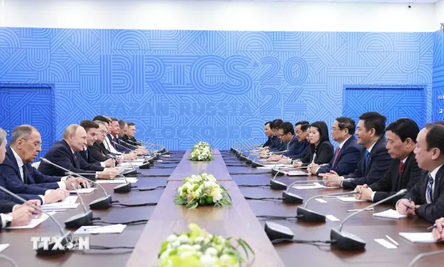
Tổng thống Nga cảm ơn Chính phủ Việt Nam và cá nhân Thủ tướng Chính phủ đã quan tâm, chỉ đạo quyết liệt việc triển khai các thỏa thuận đạt được giữa hai nước, cũng như tìm giải pháp tháo gỡ một số khó khăn, vướng mắc trong hợp tác song phương.
Thủ tướng Chính phủ Phạm Minh Chính bày tỏ vui mừng được đến thành phố Kazan và gặp lại Tổng thống Vladimir Putin; khẳng định Đảng, Nhà nước Việt Nam luôn coi trọng quan hệ Đối tác chiến lược toàn diện với Liên bang Nga. Việt Nam không bao quên sự ủng hộ, giúp đỡ chí nghĩa, chí tình của Nga đối với Việt Nam; mong muốn làm sâu sắc và hiệu quả hơn nữa quan hệ hợp tác song phương trên tất cả các lĩnh vực, phù hợp với lợi ích của hai bên, đáp ứng mong muốn và nguyện vọng của nhân dân hai nước.
Thủ tướng Chính phủ chúc mừng những thành tựu phát triển kinh tế - xã hội mà nước Nga đạt được trong những năm qua dưới sự lãnh đạo của Tổng thống Vladimir Putin, tiếp tục khẳng định tính cách, văn hóa của đất nước và con người Nga không khuất phục trước mọi thách thức, khó khăn.
Nhân dịp này, Thủ tướng Chính phủ đã chuyển lời thăm hỏi của Tổng Bí thư Tô Lâm, Chủ tịch nước Lương Cường và Chủ tịch Quốc hội Trần Thanh Mẫn; chúc mừng Tổng thống Vladimir Putin đã chủ trì thành công Hội nghị Thượng đỉnh BRICS và BRICS mở rộng, cũng như toàn bộ các hoạt động của BRICS trong năm 2024 để "xây dựng một thế giới tốt đẹp hơn".
Hai bên hài lòng nhận thấy quan hệ Đối tác chiến lược toàn diện thời gian qua không ngừng được củng cố và phát triển cả về chiều rộng và chiều sâu; các chuyến thăm, các cuộc gặp gỡ, tiếp xúc các cấp, nhất là cấp cao diễn ra hết sức sôi động; kim ngạch song phương tăng trưởng mạnh mẽ.
Tuy nhiên, hai nhà lãnh đạo cho rằng kết quả này chưa đáp ứng mục tiêu đặt ra và đòi hỏi hai bên cần phối hợp chặt chẽ hơn nữa để triển khai hiệu quả hợp tác, nhất là trong lĩnh vực kinh tế, thương mại, đầu tư, du lịch, mở rộng hợp tác sang các lĩnh vực mới như năng lượng tái tạo, cơ sở hạ tầng...
Tổng thống Vladimir Putin đánh giá cao việc hai bên đã tổ chức thành công Khóa họp lần thứ 25 Ủy ban liên Chính phủ Việt Nam - Liên bang Nga về hợp tác kinh tế - thương mại và khoa học - kỹ thuật; đề nghị hai bên triển khai hiệu quả Biên bản Khóa họp.
Thủ tướng Chính phủ Phạm Minh Chính cho biết Việt Nam sẵn sàng tạo thuận lợi cho các doanh nghiệp Nga quan tâm đầu tư vào thị trường Việt Nam, đồng thời đề nghị Tổng thống Vladimir Putin tiếp tục quan tâm, chỉ đạo Chính phủ Nga phối hợp với phía Việt Nam tiếp tục triển khai hợp tác trên mọi lĩnh vực, bảo đảm hài hòa lợi ích của hai bên.
Hai nhà lãnh đạo nhấn mạnh tầm quan trọng của hợp tác năng lượng - dầu khí, một trong những trụ cột của quan hệ Việt - Nga; ghi nhận những kết quả ấn tượng trong lĩnh vực hợp tác quan trọng này, nhất trí tiếp tục khuyến khích và tạo điều kiện thuận lợi cho mở rộng hoạt động của các doanh nghiệp dầu khí hai nước tại Việt Nam và Liên bang Nga.
Hai bên mong muốn thúc đẩy thêm các dự án hợp tác năng lượng đáp ứng nhu cầu phát triển tại mỗi nước, phù hợp với xu hướng tăng trưởng xanh, phát triển bền vững hiện nay. Trước mắt, hai bên nhất trí tập trung và tăng cường hợp tác chuyển giao công nghệ, đào tạo nguồn nhân lực, xây dựng đội ngũ chuyên gia cho Việt Nam.
Thủ tướng Phạm Minh Chính và Tổng thống Putin cũng thảo luận các định hướng và biện pháp cụ thể nâng cao hiệu quả hợp tác trong các lĩnh vực khác mà hai bên có nhiều tiềm năng và dự địa như khoa học - công nghệ, giáo dục - đào tạo, du lịch, giao thông vận tải… Hai bên nhất trí phối hợp chuẩn bị tổ chức tốt các hoạt động kỷ niệm 75 năm thiết lập quan hệ ngoại giao trong năm 2025.
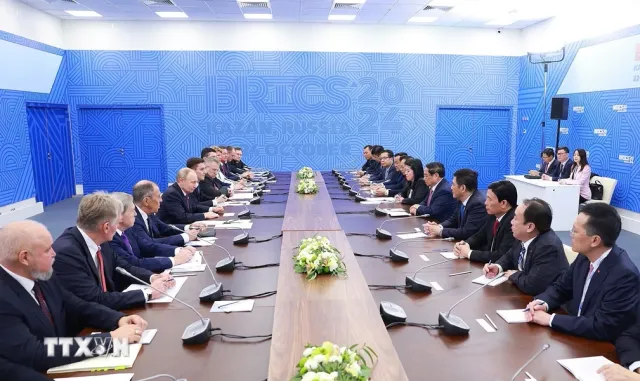
Thủ tướng Chính phủ đã cảm ơn Tổng thống Vladimir Putin và Lãnh đạo Liên bang Nga đã quan tâm và đề nghị tiếp tục tạo điều kiện thuận lợi cho cộng đồng người Việt tại Nga được sinh sống, làm ăn và học tập ổn định tại Nga, góp phần làm cầu nối hữu nghị và hợp tác giữa hai dân tộc.
Nhân dịp này, Liên bang Nga cho biết sẽ duy trì cung cấp 1.000 học bổng cho sinh viên Việt Nam đang học tập tại Nga.
Thủ tướng Chính phủ Phạm Minh Chính và Tổng thống Nga Vladimir Putin hoan nghênh, ghi nhận việc các cơ quan, doanh nghiệp hai nước đã ký và trao các văn kiện hợp tác trong dịp Thủ tướng Chính phủ Việt Nam đến Kazan.
Đây là hoạt động cuối cùng của Thủ tướng Phạm Minh Chính trong chuyến công tác tham dự Hội nghị BRICS mở rộng.
Rạng sáng ngày 25/10, Thủ tướng và Đoàn đại biểu cấp cao Việt Nam đã rời Kazan lên đường về nước, kết thúc tốt đẹp chuyến công tác.
Theo báo VTV.VN
Khẳng định vị thế Việt Nam trên đà vươn lên
25/10/2024 06:56 GMT+7
Tối 24.10 giờ địa phương (rạng sáng 25.10 giờ VN), Thủ tướng Phạm Minh Chính và đoàn công tác đã rời TP.Kazan (Liên bang Nga), kết thúc tốt đẹp chuyến công tác tham dự Hội nghị các nhà lãnh đạo BRICS mở rộng.
Chỉ trong 30 tiếng với hơn 25 hoạt động liên tục, chuyến công tác tham dự Hội nghị các nhà lãnh đạo BRICS mở rộng và làm việc tại Nga của Thủ tướng Chính phủ đã thành công tốt đẹp cả về đa phương và song phương.
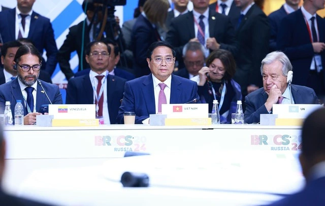
Phiên toàn thể với chủ đề "BRICS và Nam bán cầu: Cùng xây dựng một thế giới tốt đẹp hơn" diễn ra ngày 24.10 dưới sự chủ trì của Tổng thống Nga Vladimir Putin, Chủ tịch BRICS năm 2024. Thủ tướng Phạm Minh Chính và hơn 40 lãnh đạo cấp cao các nước thành viên BRICS và khách mời là đại diện các nước đang phát triển tại Đông Nam Á, Trung Đông, châu Phi và Mỹ Latinh tham dự hội nghị.
Kỷ nguyên mới - kết nối và hội nhập
Trên cương vị nước Chủ tịch BRICS 2024, Tổng thống Nga Putin khẳng định BRICS sẽ tiếp tục phát huy vai trò, thúc đẩy hợp tác toàn cầu, trao cho tất cả các quốc gia cơ hội bình đẳng, xây dựng hệ thống quản trị toàn cầu cân bằng và công bằng hơn. Đồng thời, nâng cao vai trò của các quốc gia đang phát triển hơn nữa nhằm xây dựng một thế giới tốt hơn, trong đó các lợi ích chính đáng và quyền phát triển của tất cả các dân tộc được tôn trọng.
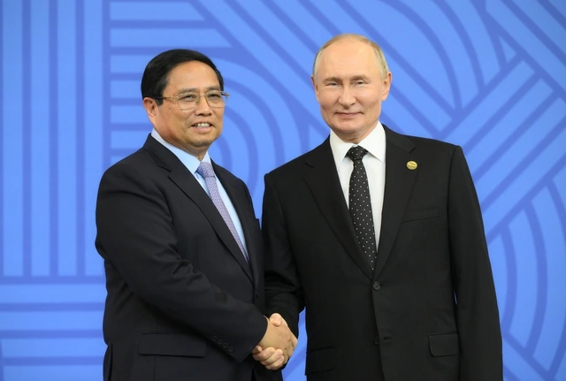
Phát biểu tại hội nghị, Thủ tướng Phạm Minh Chính đưa ra nhận định về "kỷ nguyên mới - kỷ nguyên kết nối và hội nhập sâu rộng, kỷ nguyên công nghệ thông minh và đổi mới sáng tạo". Đồng thời, nhấn mạnh tầm nhìn, cách tiếp cận toàn cầu, toàn dân, toàn diện và đề cao chủ nghĩa đa phương, đoàn kết quốc tế, xây dựng một trật tự thế giới dựa trên luật lệ, chia sẻ chung trách nhiệm để giải quyết thách thức chung chưa từng có.
Người đứng đầu Chính phủ VN cũng đề xuất 5 kết nối chiến lược để cùng kiến tạo một thế giới tốt đẹp hơn, hợp tác vì hòa bình và thịnh vượng.
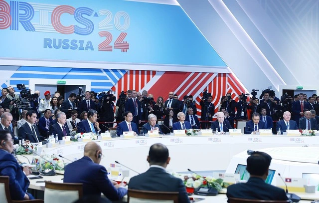
Một là kết nối nguồn lực. Theo đó, BRICS cần đi đầu trong huy động, phân bổ và sử dụng hiệu quả nguồn lực để thích ứng với biến đổi khí hậu, phát triển mạnh mẽ hơn nữa kinh tế xanh, kinh tế số, kinh tế tuần hoàn, bảo đảm an ninh lương thực, an ninh năng lượng và an ninh thông tin.
Hai là kết nối hạ tầng chiến lược cả về hạ tầng cứng và hạ tầng mềm.
Ba là kết nối các chuỗi cung ứng toàn cầu trên nền tảng ứng dụng khoa học - công nghệ hiện đại, đổi mới sáng tạo để tạo động lực mới cho tăng trưởng kinh tế, mở rộng không gian phát triển cho mọi quốc gia.
Bốn là kết nối con người với con người thông qua hợp tác văn hóa, giáo dục, du lịch và giao lưu nhân dân giữa BRICS và các nước để xây dựng một không gian văn hóa "thống nhất trong đa dạng" - như đại văn hào Nga Dostoevsky từng viết "Cái đẹp sẽ cứu rỗi thế giới", Thủ tướng nhấn mạnh.
Năm là kết nối trong cải cách các cơ chế quản trị toàn cầu theo hướng liên kết, chia sẻ, cân bằng, bình đẳng, hiệu quả, bao trùm, toàn diện để phát triển nhanh, bền vững. BRICS cần đấu tranh mạnh mẽ hơn trong chống lại xu hướng bảo hộ và chính trị hóa các quan hệ kinh tế, thương mại, khoa học - công nghệ và đổi mới sáng tạo.
Cùng xây dựng một thế giới tốt đẹp hơn
Chia sẻ bài học phát triển của VN về "kết nối, hội nhập, cùng xây dựng một thế giới tốt đẹp hơn", Thủ tướng nhấn mạnh 3 quan điểm lớn: lấy con người là trung tâm, là chủ thể, là mục tiêu; kiên định đường lối đối ngoại độc lập, tự chủ, hòa bình, hữu nghị, hợp tác và phát triển; chính sách quốc phòng "4 không".
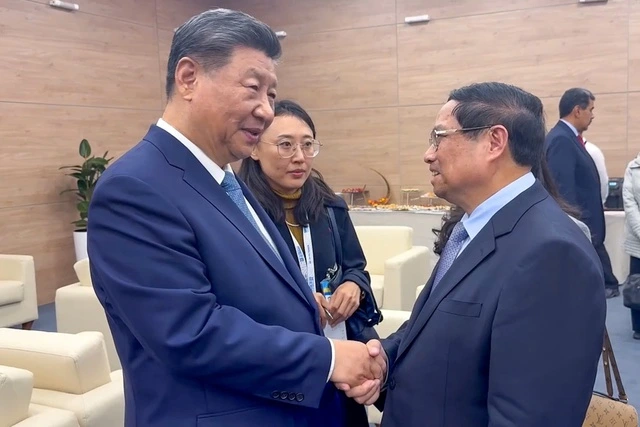
Trích dẫn câu văn của đại thi hào Nga Maxim Gorky: "Mỗi dân tộc, mỗi quốc gia là một phần không thể thiếu trong cơ thể con người vĩ đại và chỉ cùng nhau chúng ta mới có thể đạt được tiến bộ thực sự", Thủ tướng tin tưởng BRICS sẽ đoàn kết hơn nữa, phát huy sức mạnh nội sinh để cùng xây dựng một thế giới hòa bình, ổn định, hợp tác và phát triển.
Theo Phó thủ tướng, Bộ trưởng Bộ Ngoại giao Bùi Thanh Sơn, chuyến công tác của Thủ tướng đã thể hiện trách nhiệm của VN đối với các nỗ lực chung toàn cầu. Cùng với việc chủ động tham gia, đóng góp tích cực tại ASEAN, LHQ, các cơ chế APEC, G7, G20… và các cơ chế đa phương khác, qua hội nghị, VN đã thể hiện rõ tinh thần tích cực, chủ động, trách nhiệm đối với cộng đồng quốc tế.
Đồng thời, đề cao tinh thần hợp tác, khẳng định vị thế của VN trên trường quốc tế. Phát biểu của Thủ tướng tại hội nghị đã chuyển tải những thông điệp mạnh mẽ về một VN bản lĩnh, tự chủ, tự tin, tự lực, tự cường, tự hào dân tộc, đang trên đà vươn mình phát triển kinh tế - xã hội năng động; khẳng định vị thế, tư duy chiến lược trong việc giải quyết các vấn đề toàn cầu.
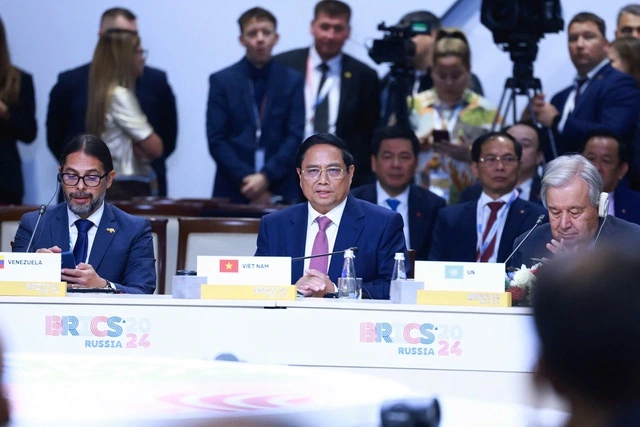
Trong thời gian tham dự hội nghị, Thủ tướng Phạm Minh Chính đã có hơn 25 hoạt động tiếp xúc song phương với Nga và gặp gỡ, tiếp xúc với nhiều lãnh đạo các nước thành viên BRICS, khách mời nhằm tiếp tục thúc đẩy quan hệ mọi mặt với các nước, các tổ chức quốc tế đi vào chiều sâu, thực chất và hiệu quả.
Với Nga, Thủ tướng đã hội đàm cùng Tổng thống Nga Vladimir Putin, tiếp Phó thủ tướng Alexander Novak cùng nhiều bộ trưởng và các tập đoàn lớn của Nga. Lãnh đạo hai bên đã trao đổi nhiều nội dung hợp tác sâu rộng, thực chất nhằm tiếp tục làm sâu sắc hơn nữa quan hệ Đối tác chiến lược toàn diện VN - Nga, hướng tới kỷ niệm 75 năm thiết lập quan hệ ngoại giao vào năm 2025. Trong đó, về kinh tế - thương mại, hai bên thông qua Kế hoạch hợp tác VN - Nga đến năm 2030, tiếp tục triển khai hiệu quả các dự án quan trọng, đẩy mạnh hợp tác về đầu tư, nhất là cơ sở hạ tầng, năng lượng.
Theo báo Thanh Niên
Tin tức sáng 25-10: Hôm nay, Quốc hội xem xét, quyết định công tác nhân sự
25/10/2024 06:00 GMT+7
Một số tin tức đáng chú ý: Tỉ giá tiếp tục 'nóng'; Nắm 10% vốn Eximbank, Gelex lên tiếng trước tin đồn 'bủa vây'; Công ty phân phối ô tô lớn nhất Việt Nam thay chủ tịch; Kế toán trưởng Tập đoàn Hòa Bình xin nghỉ sau 4 tháng...
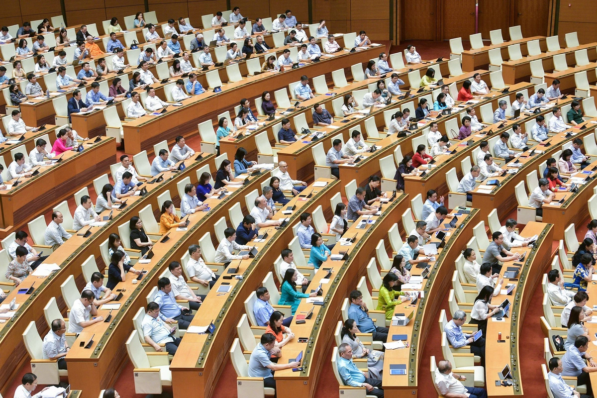Hôm nay, Quốc hội xem xét, quyết định công tác nhân sự
Theo chương trình hôm nay (25-10), kỳ họp thứ 8, Quốc hội khóa XV tiếp tục làm việc.
Vào buổi sáng, Chủ nhiệm Ủy ban Kinh tế của Quốc hội Vũ Hồng Thanh trình bày báo cáo giải trình, tiếp thu, chỉnh lý dự thảo Luật Quy hoạch đô thị và nông thôn.
Sau đó, Quốc hội sẽ tiến hành thảo luận ở hội trường về một số nội dung còn ý kiến khác nhau của dự thảo luật này. Cuối phiên họp, cơ quan trình và cơ quan chủ trì thẩm tra sẽ phối hợp giải trình, làm rõ một số vấn đề đại biểu Quốc hội nêu.
Từ 11h15 cùng ngày, Quốc hội sẽ họp riêng để xem xét, quyết định về công tác nhân sự. Nội dung về công tác nhân sự sẽ được Quốc hội tiếp tục tiến hành trong buổi chiều cùng ngày.
Sau đó, Chủ nhiệm Ủy ban Pháp luật của Quốc hội Hoàng Thanh Tùng sẽ trình bày báo cáo giải trình, tiếp thu, chỉnh lý dự thảo Luật Công chứng (sửa đổi). Kết thúc nội dung này, Quốc hội sẽ tiếp tục họp riêng về công tác nhân sự.
Sau đó, Quốc hội thảo luận tại hội trường về một số nội dung còn ý kiến khác nhau của dự thảo Luật Công chứng (sửa đổi).
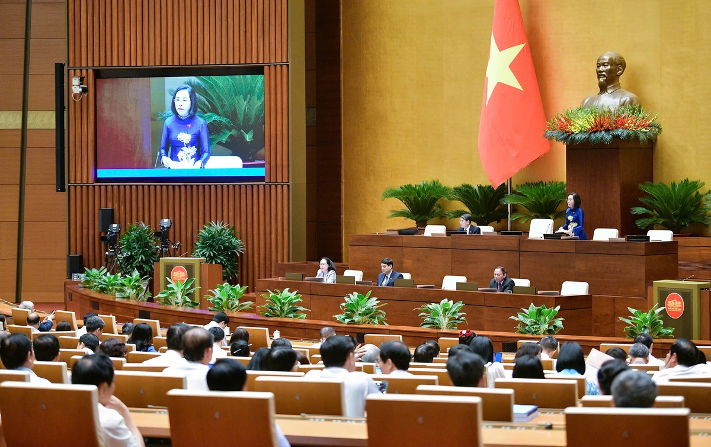
Tỉ giá tiếp tục "nóng"
Ngày 24-10, Ngân hàng Nhà nước công bố tỉ giá trung tâm là 24.260 VND, tiếp tục tăng 10 đồng so với phiên liền trước.
Tỉ giá mua giao ngay được giữ nguyên niêm yết ở mức 23.400 VND/USD; trong khi tỉ giá bán giao ngay được niêm yết ở mức 25.450 đồng.
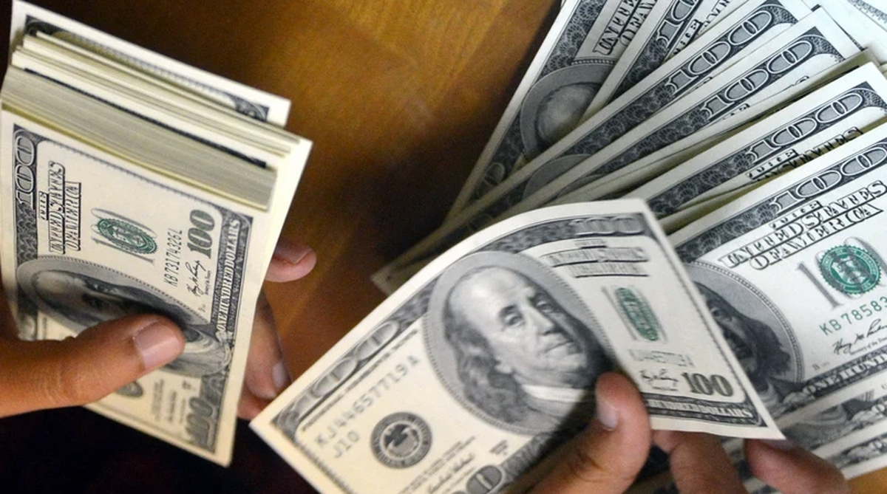
Các ngân hàng cũng đồng loạt tăng giá USD cả hai chiều.
Đơn cử tại Vietcombank, ngân hàng này niêm yết tỉ giá mua và bán 25.203 đồng - 25.473 đồng, tăng 11 đồng so với phiên trước.
Cùng xu hướng, tỉ giá USD trên thị trường tự do cũng tăng mạnh ở cả 2 chiều mua - bán, giá phổ biến ở các điểm thu đổi ngoại tệ là 25.700 VND (mua vào) - 25.800 VND (bán ra), tăng 240 đồng so với phiên trước.
Trên thị trường quốc tế, chỉ số US Dollar Index (DXY) đo lường biến động đồng bạc xanh với 6 đồng tiền chủ chốt (EUR, JPY, GBP, CAD, SEK, CHF) ở mức 104,2 điểm, tăng mạnh từ mức đáy 100 điểm hồi cuối tháng 9.
Theo báo Tuổi Trẻ
Thứ Năm, ngày 24/10/2024
Thủ tướng Phạm Minh Chính gặp Tổng Bí thư,
Chủ tịch Trung Quốc Tập Cận Bình
PV (theo TTXVN) - Thứ năm, ngày 24/10/2024 09:23 GMT+7

VTV.vn - Thủ tướng Phạm Minh Chính đánh giá cao quan hệ hai Đảng, hai nước thời gian qua không ngừng được củng cố và phát triển.
Nhân dịp tham dự Hội nghị Cấp cao BRICS mở rộng tại Kazan, Liên bang Nga, ngày 23/10 (theo giờ địa phương), Thủ tướng Chính phủ Phạm Minh Chính đã có cuộc gặp ngắn với Tổng Bí thư Ban Chấp hành Trung ương Đảng Cộng sản Trung Quốc, Chủ tịch nước Cộng hòa nhân dân Trung Hoa Tập Cận Bình. Tại cuộc gặp, Thủ tướng Chính phủ Phạm Minh Chính trân trọng chuyển lời thăm hỏi chân thành của Tổng Bí thư Tô Lâm, Chủ tịch nước Lương Cường, Chủ tịch Quốc hội Trần Thanh Mẫn tới Tổng Bí thư, Chủ tịch nước Tập Cận Bình và các đồng chí lãnh đạo chủ chốt Trung Quốc; chúc mừng những thành tựu to lớn, mang ý nghĩa lịch sử trong công cuộc xây dựng đất nước 75 năm qua của Đảng, Nhà nước, nhân dân Trung Quốc; khẳng định Việt Nam luôn coi phát triển quan hệ với Trung Quốc là chủ trương nhất quán, yêu cầu khách quan, lựa chọn chiến lược, ưu tiên hàng đầu trong đường lối đối ngoại của Việt Nam. Thủ tướng Phạm Minh Chính hoan nghênh những đóng góp nổi bật của Trung Quốc trong cơ chế BRICS, bày tỏ sẵn sàng phối hợp tích cực với các quốc gia thành viên BRICS thúc đẩy hơn nữa vai trò của các nước đang phát triển trong xử lý các vấn đề hòa bình và phát triển toàn cầu. Về quan hệ song phương Việt Nam - Trung Quốc, Thủ tướng Phạm Minh Chính đánh giá cao quan hệ hai Đảng, hai nước thời gian qua không ngừng được củng cố và phát triển, bước sang giai đoạn phát triển mới với mục tiêu xây dựng Cộng đồng chia sẻ tương lai Việt Nam - Trung Quốc có ý nghĩa chiến lược theo định hướng "6 hơn". Thủ tướng đề nghị hai bên tiếp tục tăng cường trao đổi, tiếp xúc cấp cao; thúc đẩy hợp tác thực chất trên các lĩnh vực đi vào chiều sâu, trong đó có kết nối giao thông, nhất là ưu tiên đẩy nhanh triển khai 3 tuyến đường sắt khổ tiêu chuẩn kết nối Việt Nam với Trung Quốc (Lào Cai - Hà Nội - Hải Phòng, Lạng Sơn - Hà Nội, Móng Cái - Hạ Long - Hải Phòng) nhằm thúc đẩy kết nối hai nền kinh tế; phối hợp tổ chức tốt các hoạt động kỷ niệm 75 năm thiết lập quan hệ ngoại giao hai nước và Năm Giao lưu nhân văn Việt - Trung 2025. Tổng Bí thư, Chủ tịch Trung Quốc Tập Cận Bình gửi lời cảm ơn và thăm hỏi chân thành tới Tổng Bí thư Tô Lâm và các đồng chí lãnh đạo chủ chốt Việt Nam; chúc mừng đồng chí Lương Cường vừa được bầu giữ chức Chủ tịch nước; chúc mừng những thành tựu Việt Nam đã đạt được trên tất cả các mặt, nhất là kinh tế - xã hội. Tổng Bí thư, Chủ tịch Tập Cận Bình bày tỏ vui mừng trước xu thế phát triển, ngày càng thực chất, hiệu quả của quan hệ Trung-Việt; nhấn mạnh trong bất cứ hoàn cảnh nào cũng cần thúc đẩy quan hệ theo tinh thần "4 tốt" và những nhận thức chung cấp cao đã đạt được; sẵn sàng cùng Việt Nam duy trì trao đổi chiến lược, thúc đẩy làm sâu sắc hơn nữa hợp tác thực chất, đưa quan hệ Đối tác hợp tác chiến lược toàn diện, Cộng đồng chia sẻ tương lai Trung - Việt có ý nghĩa chiến lược không ngừng đi vào chiều sâu. Để thúc đẩy kết nối giữa hai nền kinh tế, Tổng Bí thư, Chủ tịch Trung Quốc Tập Cận Bình cho biết sẽ chỉ đạo các cơ quan liên quan Trung Quốc thúc đẩy kết nối giao thông Trung - Việt.
Theo báo VTV.VN
Sớm nâng tầm quan hệ Việt Nam - Thổ Nhĩ Kỳ
TTXVN-Thứ năm, ngày 24/10/2024 09:12 GMT+7

VTV.vn - Thủ tướng Chính phủ khẳng định coi trọng mối quan hệ hữu nghị và hợp tác tốt đẹp Việt Nam - Thổ Nhĩ Kỳ; mong muốn các doanh nghiệp Thổ Nhĩ Kỳ quan tâm đầu tư hơn nữa vào Việt Nam.
Tối 23/10, theo giờ địa phương, trong khuôn khổ các hoạt động tham dự Hội nghị Các Nhà lãnh đạo Nhóm BRICS mở rộng tại Kazan, Liên bang Nga, Thủ tướng Chính phủ Phạm Minh Chính đã gặp Tổng thống Thổ Nhĩ Kỳ Recep Tayyip Erdogan. Thủ tướng Phạm Minh Chính bày tỏ vui mừng gặp lại Tổng thống Recep Tayyip Erdogan; nhắc lại những ấn tượng tốt đẹp về đất nước và con người Thổ Nhĩ Kỳ trong chuyến thăm chính thức vào tháng 11/2023. Thủ tướng Phạm Minh Chính chúc mừng những thành tựu phát triển kinh tế - xã hội quan trọng mà Thổ Nhĩ Kỳ đạt được thời gian qua; bày tỏ tin tưởng dưới sự lãnh đạo sáng suốt của Tổng thống Recep Tayyip Erdogan, Thổ Nhĩ Kỳ sẽ thực hiện thành công "Tầm nhìn Thế kỷ". Thủ tướng Chính phủ khẳng định coi trọng mối quan hệ hữu nghị và hợp tác tốt đẹp Việt Nam - Thổ Nhĩ Kỳ; mong muốn các doanh nghiệp Thổ Nhĩ Kỳ quan tâm đầu tư hơn nữa vào Việt Nam. Tổng thống Thổ Nhĩ Kỳ gửi lời chúc mừng Chủ tịch nước Lương Cường được tín nhiệm giao trọng trách mới; bày tỏ ấn tượng sâu sắc trước những thành tựu phát triển kinh tế, xã hội của Việt Nam; cảm ơn Việt Nam đã ủng hộ Thổ Nhĩ Kỳ trở thành Đối tác đối thoại theo lĩnh vực của Hiệp hội Các quốc gia Đông Nam Á (ASEAN). Tổng thống Thổ Nhĩ Kỳ chia sẻ những mất mát, thiệt hại nặng nề của Chính phủ và nhân dân Việt Nam do cơn bão số 3 (tên quốc tế là bão Yagi) gây ra. Hai nhà lãnh đạo bày tỏ vui mừng về những tiến triển tích cực trong quan hệ song phương; nhất trí sẽ tăng cường trao đổi, tiếp xúc giữa lãnh đạo cấp cao hai nước, sớm nâng tầm và làm sâu sắc hơn nữa quan hệ hai nước; đẩy mạnh quan hệ kinh tế, thương mại tương xứng với tiềm năng, phấn đấu sớm đạt mục tiêu kim ngạch song phương 4 tỷ USD, đồng thời nghiên cứu hình thành những khuôn khổ mới nhằm tạo thuận lợi hơn nữa cho thương mại và đầu tư; mở rộng hợp tác trên các lĩnh vực khác, trong đó có hợp tác quốc phòng, tạo thuận lợi cho việc đi lại giữa công dân hai nước. Hai bên cũng dành thời gian trao đổi về các vấn đề khu vực và quốc tế cùng quan tâm, trong đó có tình hình leo thang căng thẳng gần đây tại khu vực Trung Đông; khẳng định sẽ tăng cường phối hợp tại các diễn đàn hợp tác khu vực và quốc tế trong thời gian tới. Nhân dịp này, Thủ tướng Phạm Minh Chính chuyển lời của Chủ tịch nước Lương Cường mời Tổng thống Thổ Nhĩ Kỳ sớm thăm Việt Nam. Tổng thống Recep Tayyip Erdogan đã vui vẻ nhận lời.
Theo báo VTV.VN
Giá xăng dầu tiếp tục giảm, mức giảm sâu nhất 264 đồng/lít
T24/10/2024 15:16 GMT+7
Giá xăng tiếp tục giảm thêm từ 38 - 68 đồng/lít. Trong nhóm sản phẩm dầu, giá dầu giảm sâu nhất là 264 đồng/lít, giá dầu mazut tăng 139 đồng/kg.
Chiều 24.10, liên bộ Công thương - Tài chính đã công bố thông tin điều hành giá xăng dầu, bắt đầu áp dụng từ 15 giờ cùng ngày.
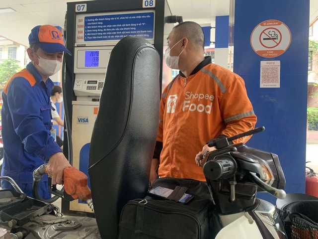
Theo liên bộ Công thương - Tài chính, thị trường xăng dầu thế giới kỳ điều hành này, từ ngày 17 - 23.10, có diễn biến tăng, giảm tùy từng mặt hàng và tiếp tục chịu ảnh hưởng của các yếu tố như: xung đột gia tăng tại khu vực Trung Đông, dự trữ dầu thô của Mỹ tăng lên.
Trước những diễn biến giá thành phẩm xăng dầu thế giới trong thời gian gần đây và thực hiện điều hành giá xăng dầu theo cơ chế thị trường có sự quản lý của Nhà nước, trong kỳ điều hành này, Bộ Công thương và Bộ Tài chính quyết định không trích lập, không chi Quỹ bình ổn giá xăng dầu đối với tất cả các mặt hàng xăng dầu.
Theo đó, từ 15 giờ ngày 24.10, giá bán các mặt hàng xăng dầu tiêu dùng phổ biến trên thị trường như sau:
Giá xăng E5RON 92 không cao hơn 19.692 đồng/lít, giảm 38 đồng/lít và thấp hơn xăng RON 95 là 1.202 đồng/lít. Giá xăng RON 95 không cao hơn 20.894 đồng/lít, giảm 68 đồng/lít.
Giá dầu diesel không cao hơn 18.057 đồng/lít, giảm 264 đồng/lít. Giá dầu hỏa không cao hơn 18.570 đồng/lít, 57 đồng/lít. Giá dầu mazut không cao hơn 229 đồng/kg, tăng 139 đồng/kg.
Cũng theo liên bộ Công thương - Tài chính, phương án điều hành giá xăng dầu kỳ này được tính toán theo diễn biến giá xăng dầu thế giới nêu trên, tỷ giá VND/USD tăng mạnh và các quy định hiện hành.
Phương án điều hành giá xăng dầu nói trên nhằm bảo đảm biến động giá xăng dầu trong nước phù hợp với biến động giá xăng dầu thế giới; tiếp tục duy trì mức chênh lệch giá giữa xăng sinh học E5RON 92 và xăng khoáng RON 95 ở mức hợp lý để khuyến khích sử dụng nhiên liệu sinh học theo chủ trương của Chính phủ; bảo đảm hài hòa lợi ích giữa các chủ thể tham gia thị trường.
Bộ Công thương yêu cầu các thương nhân kinh doanh xăng dầu có trách nhiệm đảm bảo nguồn cung xăng dầu nhu cầu tiêu dùng của thị trường và sẽ xử lý nghiêm nếu phát hiện các hành vi vi phạm.
Theo báo Nhân Dân